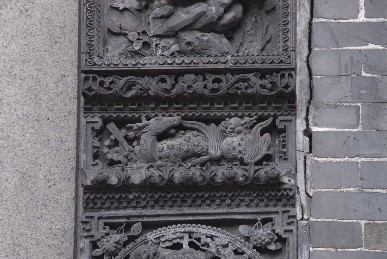

福禄寿三星，起源于远古的星辰自然崇拜。古人按照自己的意愿，赋予他们非凡的神性和独特的人格魅力。
福星
古人认为岁星（木星）照临，能降福于民，于是有了福星的称呼。福有“五福”之说：“一曰寿；二曰福；三曰康宁；四曰攸好德；五曰考终命。”福的含义在中国吉祥图案中通常以蝙蝠、虎和福字图案等视觉形象表达出来。
禄星
在北斗星之上有六颗星，合起来称为文昌宫，其中的第六颗星就是禄星。《史记•天官书》说：“曰文昌宫：一曰是将，二曰次将，三曰贵相，四曰司命，五曰司中，六曰司禄。”司禄，即职司功名利禄的禄星。禄指俸禄，寓意高官厚禄。“禄”与鹿同音，故民间吉祥图案中常以“鹿”代表“禄”。
「位于：中进西路」